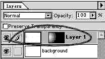
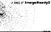
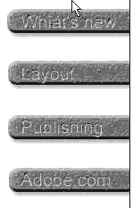
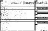

|
|
| 当前位置：电脑报电子版 > 1999 年 > 44 期 > OA专刊 > Adobe再展雄风——网络图像制作利器：ImageReady2 |
| 《 Adobe再展雄风——网络图像制作利器：ImageReady2 》 |
| ImageReady是Adobe公司专为网络图像出版而开发的一款设计软件，由于其具有非常便捷的网络图像制作和优化功能，并且可以和Adobe的其他产品（如Adobe Photoshop、Adobe Illustrator等）之间进行良好的文件交流，因此很快变成为网络图像制作工具中的佼佼者。而现在，Adobe公司又推出了ImageReady2.0版，并且将之整合入最新版的Photoshop5.5中，这样一来不仅加强了Photoshop针对网络图像的制作能力，同时也为ImageReady创造了更好的与Adobe其他软件相互对话的渠道。 与1.0版相比，新版的ImageReady2真可谓有本质的飞跃。在2.0版本中，Adobe公司更进一步优化了ImageReady的图像算法，使导出的图片尺寸更小而精度更高；同时ImageReady2增加了图像切割（slicing）、鼠标动作响应（Rollovers）、图层特效（Layer effects）、图像式样（Styles）、圆形以及圆角矩形的绘制功能。此外，ImageReady2还能够读取和编辑mov、avi格式的影视文件，甚至是flc文件，这就更方便了用户制作GIF动画。（Adobe的拿手好戏！） OK，下面就让我们通过一个网页制作的实例来体会Adobe ImageReady2的方便和快捷吧。图1是一个由其他图像软件生成线绘的图片，我们的目的是将它作为背景图案，并制作一个专门主题的网页（主题姑且定为：“测试ImageReady2”）。 首先，使用Photoshop对这个图像进行进一步编辑。先给这个图片增加一个Alpha通道，使原图像的阻光度随通道由左向右递减（如图2所示，我觉得使用ImageReady网络图像制作工具的最大好处之一就是可以通过其和Photoshop通信，将Photoshop的通道功能在网络图像制作中发挥得淋漓尽致！）。然后在不同的层中加入相应的文字，达到图3的效果。最后保存这个图像，并按下Photoshop工具栏最下方的切换按钮，切换到ImageReady2中继续编辑这个图像。 考虑到图像的右半部分将用来放置四个起导航作用的按钮，因此感觉中标题行“a test of ImageReady2”的文字过于唐突了一些，所以我想在“ImageReady2”字样下增加一个相近色的渐变以增加呼应。然而，问题开始出现了，我不知道你是否曾在ImageReady2中使用过渐变填充工具（Gradiant），在我第一次使用ImageReady2时，始终没能找到相关的工具，最后才发现原来ImageReady2将Gradiant功能整合在了Layer Effects功能集中。  下面，我们来制作这个相近色的渐变填充：先按下“F7”打开层（Layer）面板，按下层面板中的新建按钮在标题文字所在的层之下新建一个层。在这个新建的层中用遮罩（Marquee Tool）工具将需要填充的区域选定，按下“Alt＋Del”将前景色填入已经选定的区域。然后按下层面板中的层特效（Layer Effects）按钮，在弹出的菜单中选择“Gradient/Patterns”选项，填充的区域就会变成一个色彩渐变。要修改这个色彩渐变只需要双击层面板中的“Gradient/Pattern”效果层就可以呼出“Gradient/Pattern”的属性设置面板，在这个效果层面板中我们可以通过调节色彩滑块更改色彩渐变，同时还可以选择使用线性渐变还是圆形渐变，也可以使用连续图案（Pattern）来填充区域。在这个例子中，我们选择的由白色（＃FFFFFF）向嫩黄色（＃F8FC7C）的色彩渐变。 接着，我们需要在此背景之上加入导航按钮，并为这些导航按钮增加交互效果。首先在层面板的最上方新建一个层作为第一个按钮的所在层，之所以要将每个按钮分配在不同的层中是为了下面能够方便地制作按钮的交互效果。选定这个层，然后用鼠标按住绘制矩形（Rectangle Tool）按钮，在其弹出的按钮菜单中选择绘制圆角矩形按钮（与直角矩形相比，圆角矩形更加悦目，因此在平面设计和网页制作中被广泛使用，ImageReady2为此特别新增这个特殊的形状绘制工具）。圆角矩形画好后，选择“Window→Show Styles”命令，打开Styles面板，双击一个自己中意的式样，刚才绘制的圆角矩形就立刻变成一个可人的按钮了。（Styles功能是ImageReady为普通用户提供的一个非常实用的功能，其中录制了许多常见的式样效果，避免了用户制作效果的反复劳动。在这个演示中我选择的是“Button－Stone”式样）。最后，使用文字工具，在这个按钮上输入按钮的名字就完成了按钮的制作（在此，建议你给按钮文字加上2pixels深度的“Bevel and Emboss”层特效，以使按钮文字更逼真）。以相同的方法完成其余的三个按钮，即可得到图4中的效果。 接下来要为这些按钮增加交互功能。由于网页中的交互功能是通过图片交替来实现的，因此，在制作交互功能之前，我们先得决定图像的切割区域。ImageReady2为用户提供了“Slice Tool”和“Slice Select Tool”两个工具，大大简化了图片切割的复杂工作。为了能够更加精确和快捷的切割图片，建议在切割图片之前先打开图像标尺（“View→Show Rulers”，快捷键为“Ctrl＋R”），同时开启捕捉辅助线功能（“View→Snap to Guides”，快捷键为“Ctrl＋Shift＋;”）。通过拖拉标尺，你可以在图像上建立切割区域的辅助线，这样可以给切割工作减少许多为了对齐而引来的不必要的麻烦，将本实例中的图形切割完毕(图5)，可见其中信封状的图标表示这是一个切割区域（Slices），在此图标前的序数就是切割区域，我们可以使用“Slice→Hide Slice”命令来隐藏这些切割图标。 图片的切割工作完成之后就可为按钮增加交互效果了。按下“a”键切换到切割区域选择“Slice Select Tool”工具，选定一个包含按钮图片的切割区域（比如第三个切割区域，即第一个按钮图案所在的切割区），然后选择“Windows→Show Rollover”命令，打开鼠标响应（Roloover）面板。此时，这个面板中只有一个名为“Normal”的画面状态，按下新建“New”按钮，新建一个鼠标状态，ImageReady2默认的新建鼠标状态为“Over”（用来响应MouseOver事件，即鼠标移入画面时产生的响应效果），这正是我们需要的！拥有了新的鼠标状态就可以制作“mouseover”状态下的按钮画面了，在此我制作的效果是按钮向外突出，并且文字变为彩色。 用上述同样的方法给四个按钮增加了响应鼠标的特效之后，这个网页的制作即将完成，我们还需要做的最后一件事是为这四个按钮加上各自指向的URL。选择“Windows→Show Slice”打开Slice面板，这个面板显示的是被激活的切割区域的属性，你可以在其中修改切割区域的图片名称、URL连接、背景颜色等等。 至此我们完成了整个网页的制作，是不是觉得这个过程太简单了啊？hehe，选择“File→Preview in”命令就能使用你喜欢的浏览器观看自己的作品了！难道不令人惊喜吗？因为所有的一切都是那么简单！使用ImageReady可以免去你在制作网页时许多恼人的步骤，当然ImageReady绝不是万能的，况且现在的20版仍有许多等待改进之处。 |
| 下载本期推荐软件 | 页 首 |
| 《电脑报》版权所有，CPCW网站编辑部设计制作发布 |